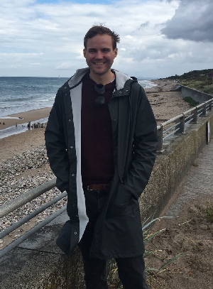

My name is Theis. I'm a writer, translator, aspiring web developer, and a human being of planet Earth. Feel free to reach out and say hi!
I was born in a remote part of Jutland, Denmark. Moved to Copenhagen to study comparative literature at 18. Completed my studies and subsequently spent eight years in Los Angeles as a teacher, translator and culture writer. I currently live in Copenhagen with my girlfriend and my dog.

As a journalist, I’ve freelanced for numerous publications, served as a contributing editor for Los Angeles magazine, research assistant for Playboy and staff writer and translator for VICE Denmark. I’ve covered underground black metal in Los Angeles, lampooned the Danish version of Idol and produced radio for KCRW.
Listen to my story about two Coachella Valley-punk rockers who host shows in their mom's living room:
My Danish translation of British author Denton Welch’s 1945 coming-of-age drama In Youth is Pleasure was published by Forlaget Sidste Århundrede in 2019. I have also worked as a commercial translator for the better part of a decade specializing in entertainment, journalism, and subtitling for various media outlets.
In 2015, I completed a bootcamp course in front-end development at General Assembly in Los Angeles. I love learning new technologies and exploring the ever-expanding field of programming, and I am currently working towards making a career in web development. I will be uploading various projects to my GitHub-page. Please feel free to comment and make suggestions for improvement.